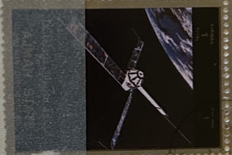
| SOURCE | TITLE| IMAGE MATCH | click to source page |
| en.wikipedia.org | Explorer S-66 - Wikipedia | 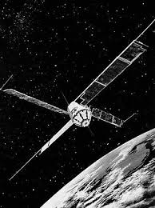 |
| www.astronautix.com | Transit | 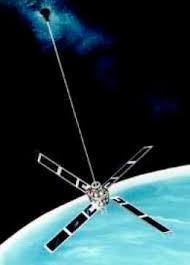 |
| space.skyrocket.de | Transit-O (NNS, Oscar) - Gunter's Space Page |  |
| space.skyrocket.de | BE A, B, C (Explorer (20), 22, 27) - Gunter's Space Page | 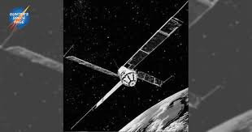 |
| www.facebook.com | Transit: the world's first satellite navigation system | 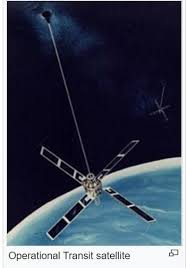 |
| www.researchgate.net | Navigation satellite TRANSIT (URL 4) Slika 8. Navigacijski ... | 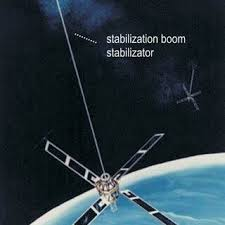 |
| www.reddit.com | KSP History Part 115 - Magsat (highly successful, dual ... | 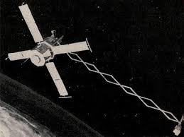 |
| outside.vermont.gov | NATIONAL SPATIAL REFERENCE SYSTEM | 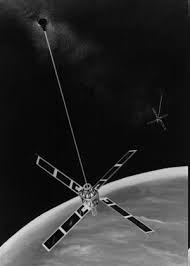 |
| en.wikipedia.org | Small Astronomy Satellite 3 - Wikipedia | 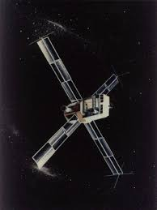 |
| www.nasa.gov | Skylab 4 - NASA | 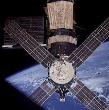 |
| www.thespacereview.com | The Space Review: Blue collar art | 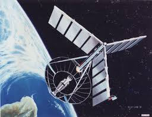 |
| www.wikidata.org | Beacon Explorer C - Wikidata | |
| www.jhuapl.edu | 7420 Kennedy | 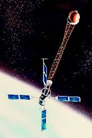 |
| www.alamy.com | from a series of cards for Brooke Bond Tea; 1973; "The Race ... | 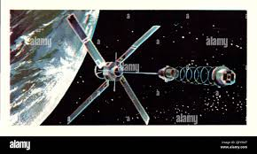 |
| x.com | Uhuru, the Swahili word for "freedom," was the name given to ... | 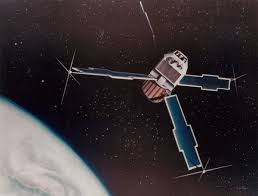 |
| prints.sciencesource.com | Skylab Tapestry by Science Source - Science Source Prints | 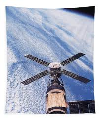 |
| www.youtube.com | Transit 5B-5 2024-08-27 - YouTube | 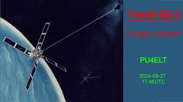 |
| www.usatoday.com | Big moments in space exploration | |
| space.stackexchange.com | payload - Are there any images of SOOS? - Space Exploration ... | 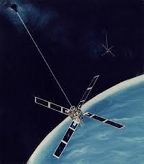 |
| thenomen.bandcamp.com | International Space Station | The NoMen | 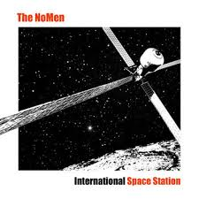 |
| picryl.com | Artist's concept of a NAVSTAR Global Positioning System ... | 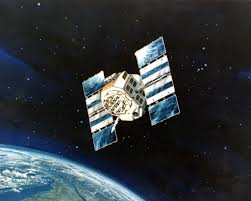 |
| spaceflightnow.com | Northrop Grumman servicer docks with active satellite in ... | 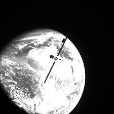 |
| ntrs.nasa.gov | GPO PRICE Hard copy (HC) i,, | 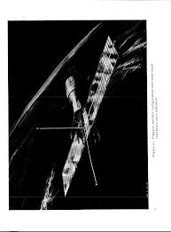 |
| www.space.com | Skylab: First U.S. space station | Space | 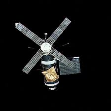 |
| www.livenowfox.com | Skylab: The rise - and meteoric fall - of America's first space ... | 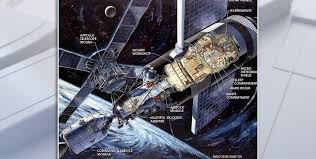 |
| www.nytimes.com | An Orbital Rendezvous Demonstrates a Space Junk Solution ... | 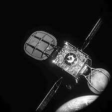 |
| www.drewexmachina.com | You Can't Fail Unless You Try: NASA's Pioneer P-3 Lunar ... | 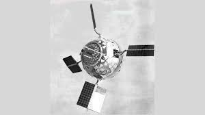 |
| www.bbc.com | Space - BBC News | 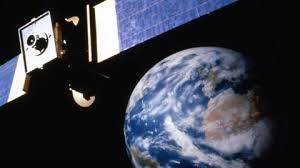 |
| www.al.com | 9 things to know about Skylab, America's first manned space ... | 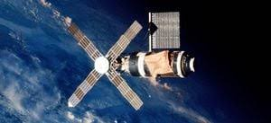 |
| airandspace.si.edu | ITOS Meteorological Satellite | National Air and Space Museum | 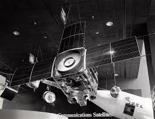 |
| www.instagram.com | It's Throwback Thursday — and this one helped the world find ... | 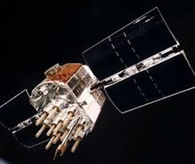 |
| www.forbes.com | The Summer The Skylab Space Station Crashed, 41 Years Later | 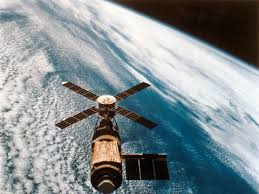 |
| earthsky.org | For the 2nd time, Northrop Grumman catches a satellite in ... | 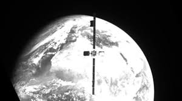 |
| www.youtube.com | How Satellites Revolutionised How We Navigate, and Tell the ... | 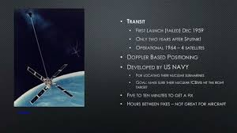 |
| thesolarsystem.fandom.com | Juno (spacecraft) | The Solar System Wiki | Fandom | 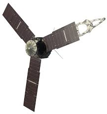 |
| text-message.blogs.archives.gov | What Goes Up Must Come Down: Dealing With the International ... | 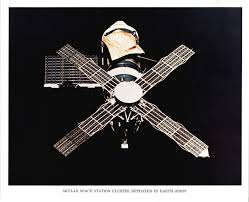 |
| x.com | Two more of the Dragonfly Discovery design from 2001: A ... | 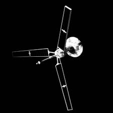 |
| www.reddit.com | In 1993, the 65-foot-diameter satellite, called Znamya ... | 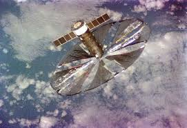 |
| launiusr.wordpress.com | Whither Space Astronomy? | Roger Launius's Blog | 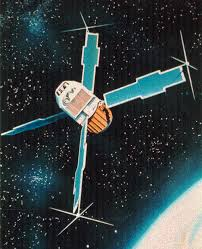 |
| www.newscientist.com | NASA turned on by blow-up space stations | New Scientist | 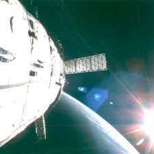 |
| link.springer.com | Maturity of the US Space Program | Springer Nature Link | 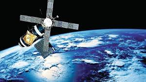 |
| bendisaster.bandcamp.com | SEE YOU NEXT SPRING | Ben Disaster | 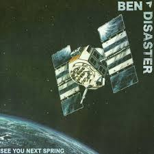 |
| www.space.com | Two private satellites just docked in space in historic ... | 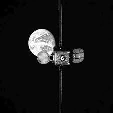 |
| spaceflightnow.com | Spaceflight Now | Breaking News | Gamma Ray Observatory ... | 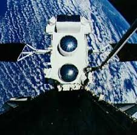 |
| www.allposters.com | Artist's Concept of Nasa's Juno Spacecraft During its Earth ... | 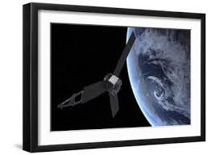 |
| www.ninfinger.org | Ninfinger Productions: Scale Models | 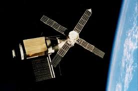 |
| www.facebook.com | On May 14, 1973, NASA launched Skylab, the first American ... | 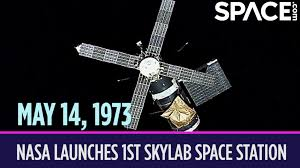 |
| www.americaspace.com | Tally-Ho the Skylab': The Mission to Save America's Space ... | 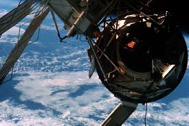 |
| www.cnbc.com | Northrop Grumman MEV-1 spacecraft services Intelsat 901 ... | 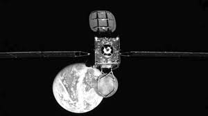 |
| www.instagram.com | FLASHBACK: It was the global event that had many of us ... | 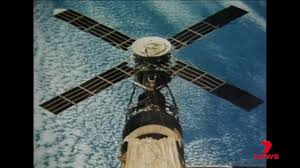 |
| www.upi.com | 50 years later, Skylab remembered as major force in space ... | 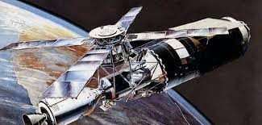 |
| timeandnavigation.si.edu | Transit Satellite | Time and Navigation | 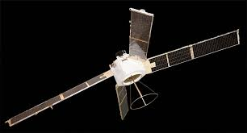 |
| mostlymissiledefense.com | Space Surveillance Sensors: ALCOR Radar (May 17, 2012 ... | |
| www.historyofinformation.com | The US Navy Launches NAVSAT, the First Operational Satellite ... | |
| www.astronautix.com | Prognoz | |
| en.wikipedia.org | Explorer 34 - Wikipedia | |
| www.autoevolution.com | This Piece of a Defunct NASA Space Station Hit Australia in ... | |
| space.skyrocket.de | Transit-5E 1 (S/N 39) - Gunter's Space Page | |
| www.cnet.com | At 20, the International Space Station remains a stellar ... |